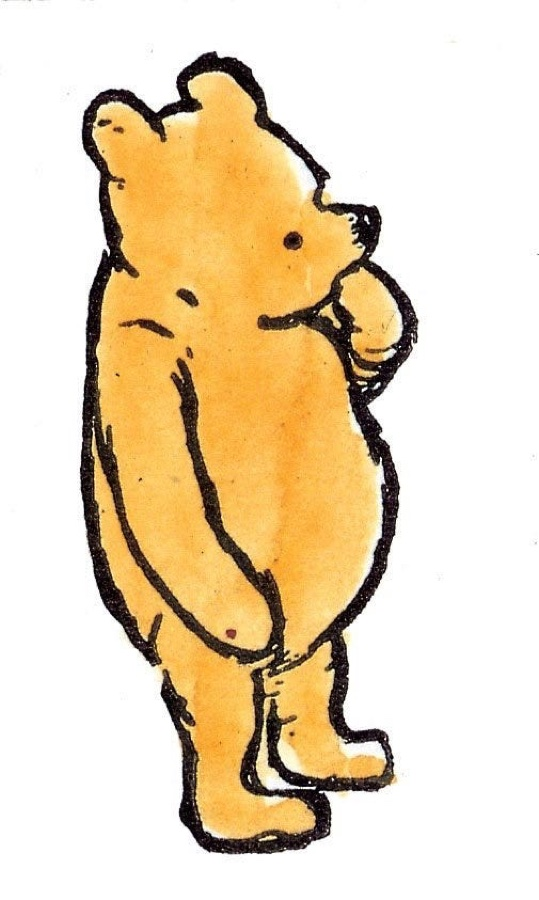
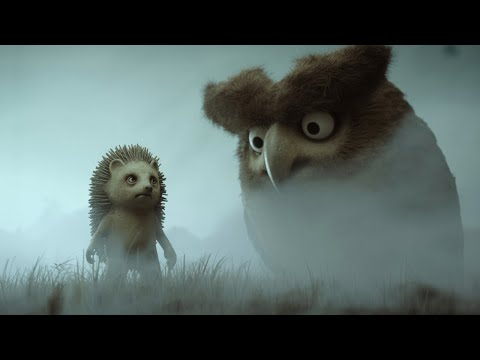
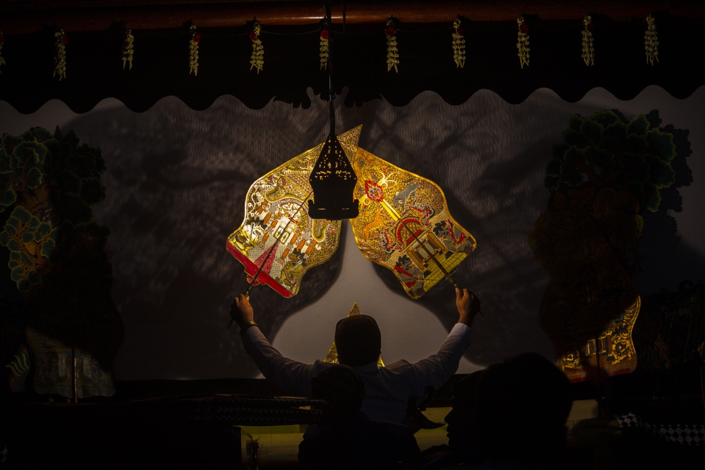

Винни-Пух главами, маленькие защитники внутри тела, экран без вины, аудиосказки на полтора часа, «Ёжик в тумане» и театр теней из одеяла.
Ernest H. Shepard, 1926. Public domain. Источник: Wikimedia Commons
На третий день дома с ребёнком в соплях план «никакого экрана» обычно складывается. Это нормально. Этот выпуск не про то, как заменить экран, а про то, как разнообразить дни так, чтобы они не сливались в один длинный мультик.
Ничего из перечисленного не требует выйти из дома и поставить ребёнка на ноги. Большая часть делается из кровати.
Поделиться выпуском
Отправить тем, кто сейчас сидит дома с температурой, чаем, мультиками и остатками планов на неделю.
«Винни-Пух и все-все-все» в пересказе Заходера: ровно та книга, которая нужна на неделе дома
3–8 лет10–15 минут на главуболеем, перед сном, под одеялом

Эрнест Шепард, оригинальная иллюстрация к первому изданию Милна, 1926. Public domain.
Когда дома болеем, идеально работают книги, которые можно читать по одной главе в день. У «Винни-Пуха» главы короткие и самостоятельные, между ними не нужна логистика, и за неделю лежания получается естественный ритуал. Одна перед обедом, одна перед сном.
Тут стоит сказать важное про переводчика. Борис Заходер не переводил Милна. Он сам так говорил: пересказал. Это разные жанры. Перевод стремится быть максимально точным к оригиналу, пересказ берёт оригинал и делает из него русскую книгу.
У Милна есть Pooh, у Заходера Винни-Пух. У Милна есть Owl, у Заходера Сова. У Милна есть Eeyore, у Заходера ослик Иа-Иа. И вся эта весёлая словесная игра, пыхтелки, сопелки, кричалки, Слонопотамы и Бяки-Буки, это не Милн. Это Заходер.
Как выбрать версию
Если книга нужна для русского чтения вслух, выбирайте именно Заходера. Это одна из лучших русских детских книг XX века, которая случайно оказалась с английским сюжетом.
Алан Милн, «Дом на Пуховой опушке». Вторая книга про Винни-Пуха, тоже в пересказе Заходера. По атмосфере чуть взрослее, для ребёнка 5+ работает уже как воспоминание о первой книге.
Дэвид Бенедиктус, «Возвращение в Зачарованный лес». Официальное продолжение 2009 года. Не все его любят, но если ребёнок просит «ещё», то это есть.
Туве Янссон, «Шляпа волшебника». Та же камерная, медленная интонация про дружбу и ничегонеделание. Для болеющего ребёнка идеально.
💬 Повод поговорить
Что внутри нас, когда мы болеем: разговор без анатомии и без страшилок
4–8 лет5 минуткровать, чай, ожидание врача
Дети 4–6 лет не воспринимают болезнь так, как взрослый. Для взрослого болезнь это сбой в работе организма. Для ребёнка это огромный непонятный туман: вчера всё было нормально, а сегодня меня тошнит, ломит ноги, и почему-то нельзя в детский сад.
Хорошо работает другой заход. Не объяснять с точки зрения биологии, а дать образ. В теле живут маленькие защитники. Сейчас у нас в крови идёт битва: на нас напали микробы, и защитники отбиваются. Они выделяют тепло, поэтому у нас жар. Они отвлекают всё на себя, поэтому есть не хочется. Они заставляют нас спать, потому что во сне у них больше сил. Когда они победят, мы выздоровеем.
Это не лекция по иммунологии
В реальности всё сложнее, но образ правильный на детском уровне: иммунный ответ действительно создаёт жар, выключает аппетит и требует энергии. Главное, ребёнку понятно и не страшно.
Вопросы, которые работают
Как ты думаешь, что сейчас делают внутри тебя маленькие защитники?
Они мальчики или девочки? Или зверушки?
Они большие или маленькие? Какого цвета?
Если бы у тебя был один большой защитник, как его звали бы?
Что отвечать на трудное
«Я умру?» Нет. От этой болезни не умирают, у тебя обычная простуда или то, что назвал врач. Защитники сильные, через несколько дней они победят.
«Почему именно я заболел?» Потому что микробы летают в воздухе, и иногда они попадают в нас. Это случайность. Не наказание и не «потому что не съел кашу».
«А ты тоже заболеешь?» Может быть. Если заболею, защитники поработают и у меня. Но мы будем дома вместе.
Куда продолжить
Если хочется аккуратно поговорить о теле подробнее, проще всего выбрать одну хорошую детскую энциклопедию о человеке или короткий аудиокурс без медицинских подробностей. В больничном лучше не превращать разговор в урок биологии.
🧠 Полезное
Экран в больничном: почему это нормально
для взрослых4 минутыболеем, карантин, неделя дома
В обычный день экран конкурирует с прогулкой, свободной игрой, разговором, сном и живым движением. В больничном большая часть этой нормальной жизни временно выключена: гулять нельзя, играть сил нет, разговаривать тяжело. Экран в такой ситуации часто не вытесняет важное, а закрывает пустоту, которую сейчас всё равно нечем заполнить.
Поэтому если на третий день болезни ребёнок посмотрел два часа мультиков, это не катастрофа. Это не новое семейное правило, а режим выживания.
Главная мысль
В больничном экранное время не считается так же, как в обычной неделе. После болезни правила можно вернуть обратно.
Что держится даже в больничном
Не ставить экран фоном к еде. Сначала суп, потом серия.
Не ставить экран за час до сна. Сон и так хрупкий.
Один экран, не два. Если телевизор работает, телефон рядом уже не нужен.
Выбирать что-то медленное: «Тоторо», «Муми-тролли», старый «Винни-Пух», советская кукольная анимация.
лёжа, во время рисования, перед сномот 5 минут до часакогда глаза устали от экрана
Аудиосказки хорошо работают в дни, когда глаза устали от экрана, а делать ничего не хочется. Ребёнок лежит, что-то рисует или просто смотрит в потолок, и у него в голове раскручивается история. Это не пассивное потребление как мультфильм, и не активная нагрузка как чтение. Что-то посередине, и в больничном это золотая середина.
Главное правило выбора: голос должен быть взрослым. Хорошие записи это когда актёр читает книгу как книгу, без сюсюкания.
Поставьте плейлист на три-четыре часа и не трогайте его. Главная ошибка взрослого: ребёнку понравился рассказ, и взрослый бросается выбирать следующий. Не надо. Дайте потоку работать.
👀 Посмотреть
«Ёжик в тумане» Юрия Норштейна: десять минут, которые признали лучшим мультфильмом всех времён
от 4 лет10 минутЮрий Норштейн, Союзмультфильм, 1975

Превью видео. Ниже — встроенный плеер YouTube.
В 1975 году Юрий Норштейн снял на студии Союзмультфильм десятиминутный фильм по сказке Сергея Козлова. В 2003 году в Токио на фестивале аниматоров «Лапута» 140 кинокритиков и мультипликаторов из разных стран признали «Ёжика в тумане» лучшим мультфильмом всех времён. Этот мультфильм называл одним из своих любимых Хаяо Миядзаки.
Норштейн делал его сложно. Союзмультфильм не выделил съёмочный станок, и режиссёр с командой сами строили конструкцию для съёмок. Туман создавали через прозрачные слои: на плёнку наносили пыль, под ней находился персонаж, и через это появлялась знаменитая дымка.
Будет, и это часто удивляет взрослых. «Ёжик в тумане» работает на детях 4–7 лет неожиданно сильно. Они смотрят молча, и потом долго про это думают. Это не развлекательный мультфильм, а медленное, странное, немного тревожное кино, в котором важнее атмосфера, чем сюжет.
После просмотра лучше не комментировать. Не «понравилось?», не «ну, что там было?», просто посидеть рядом. Если ребёнок захочет поговорить, он сам начнёт.
✂️ Сделать руками
Театр теней с одеялом и фонариком: древняя технология у вас в спальне
3–8 лет20–40 минутодеяло, фонарик, две руки

Wayang kulit, индонезийский театр теней. Фото: FaizAttariqi / Wikimedia Commons, CC BY-SA 4.0.
Театр теней это очень старая штука. Первые упоминания идут из Китая III века до нашей эры, потом он распространился по Юго-Восточной Азии и пришёл в Европу через Шёлковый путь. В Индонезии есть традиция wayang kulit, где спектакли длятся часами и сопровождаются гамеланом.
Принцип, который Норштейн использовал для тумана в «Ёжике», технически похож на театр теней с прозрачными слоями. Так что то, что вы делаете в спальне с фонариком, имеет довольно приличную родословную.
Как сделать дома
Завесьте дверной проём простыней или натяните одеяло между двумя стульями. С одной стороны источник света: настольная лампа, фонарик, телефон с включённым фонариком. С другой стороны зритель. Между светом и тканью ваши руки.
Заяц. Указательный и средний пальцы вверх, остальные сложены. Уши торчат, нос движется.
Собака. Большой палец вниз, остальные пальцы сверху. Челюсть открывается и закрывается.
Птица. Скрестить кисти, большие пальцы переплести. Остальные пальцы машут как крылья.
Волк. Та же собака, но более вытянутая и с медленными движениями.
Если сил нет вообще
Просто посветите фонариком в стену и покажите ребёнку, как двигается тень его собственной руки. Этого хватит на десять минут восторга. Театр теней начинается с одного движения.
Возраст: 2+кровать, диван, любое лежачее место5 минут
Лежим вместе и смотрим в потолок. На пятнах краски, тенях от люстры, трещинках, разводах ищем фигуры. Корабль, кит, гриб, динозавр.
Если на вашем потолке нет ничего, кроме идеальной белой штукатурки, поищите на обоях. Если обоев нет, поищите в облаках за окном. В крайнем случае закройте глаза и поищите в темноте под веками. Везде что-то есть.
Если нашли хотя бы одну фигуру, выпуск выполнен. Вы великолепны.
Открыть Слойку
Бот поможет понять, как одеть ребёнка по погоде, когда больничный закончится и снова можно будет выйти наружу.
Проект собирается вручную: тексты, ссылки, картинки, проверка источников и вся эта родительская археология. Даже 10, 15 или 50 рублей помогут выпускать новые дайджесты чаще.